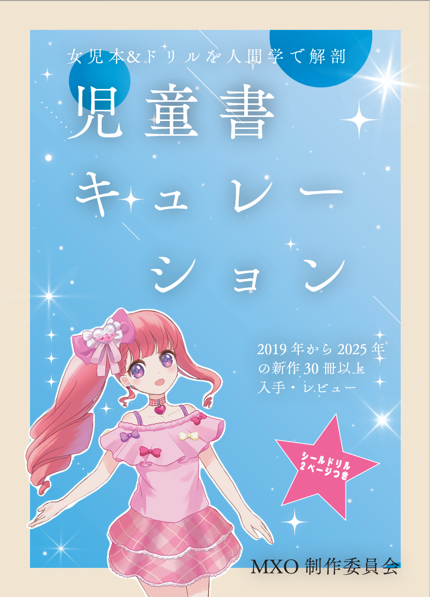
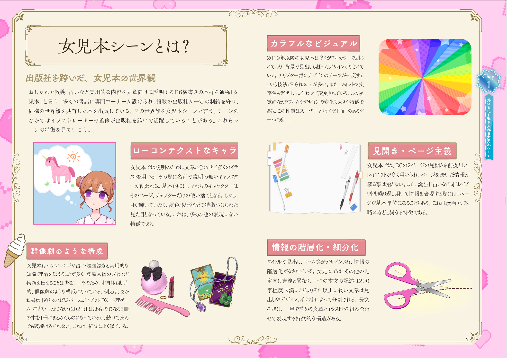
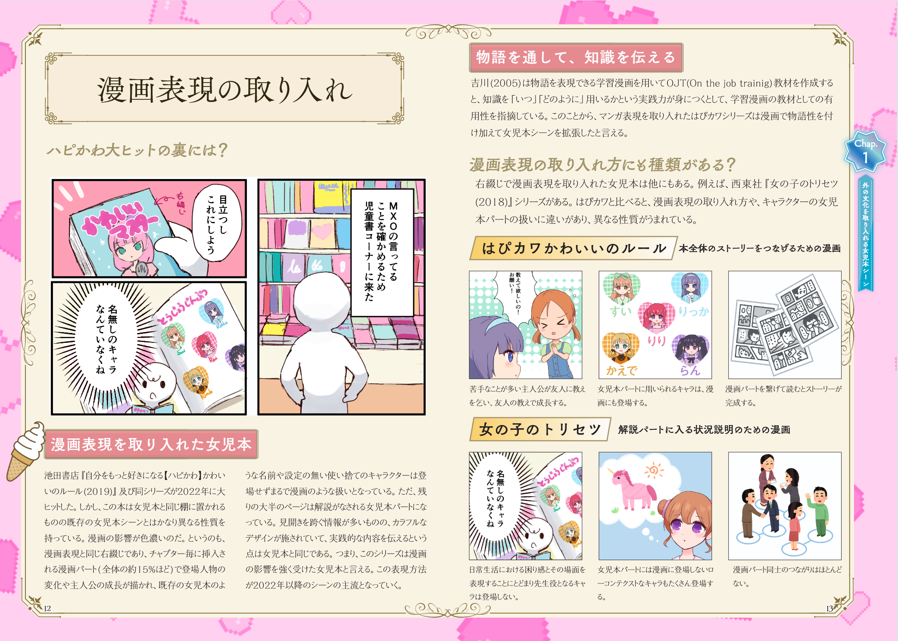
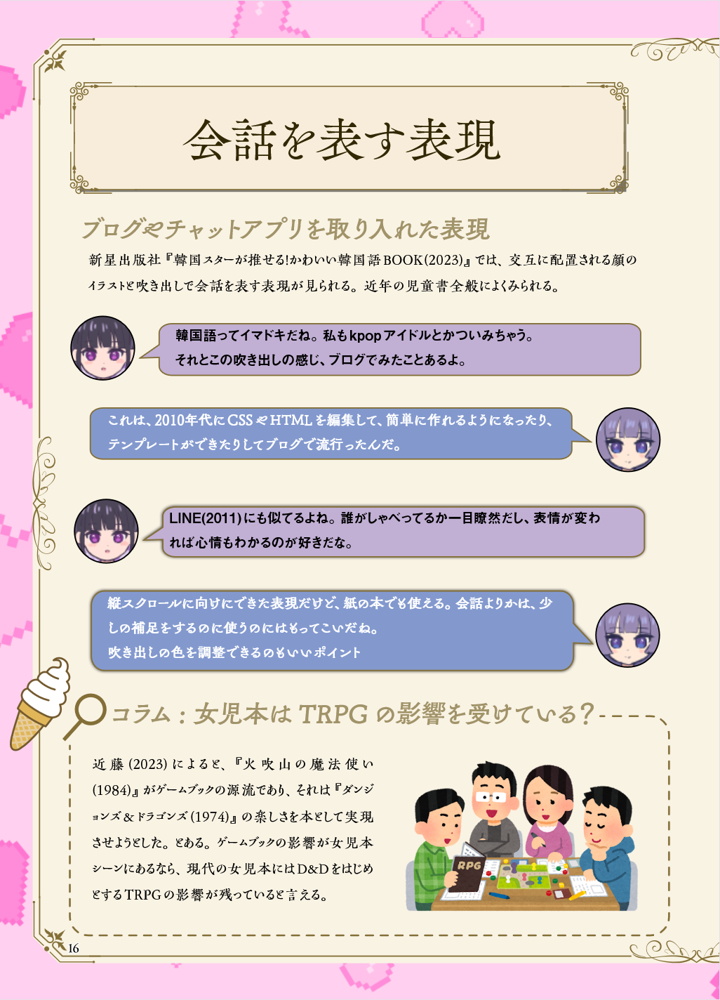
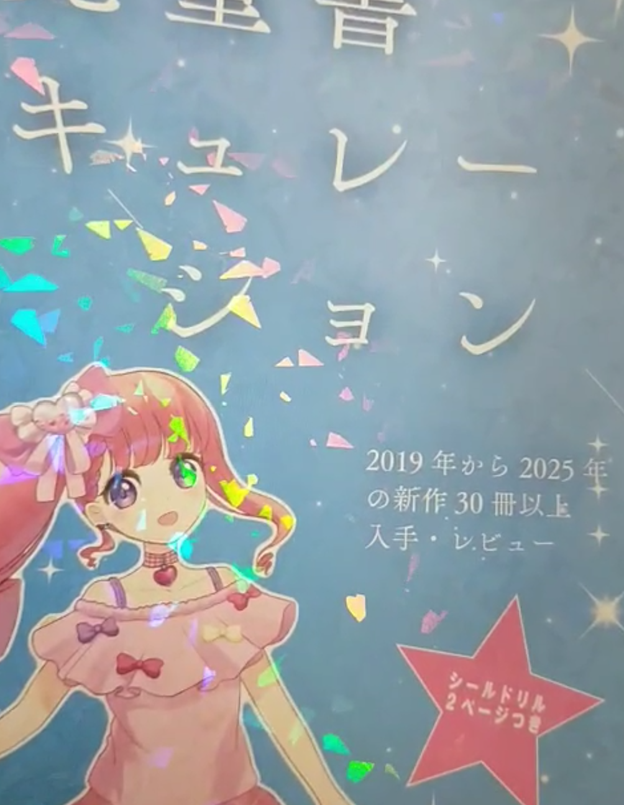

私は、どうして趣味のことについて本を出すのか？そこまでどうしてやれるのか？と聞かれたことがあります。 その問いに答えます。はじめての本を出す前には、私はつぎのようなことをモチベーションにしていました。
- 考えていたことを物理的媒体にして、証拠を残すこと。
- 既存の書籍や考え方の問題点を適示、修正して更新すること。
- 本を書くことを通じて、対象・題材について深く知ること。
どれも、立派な動機です。しかし、本を出してみると、結果的に全く違うメリットがある事がわかりました。 本を書いている時間よりも、出し終わって少しした後に、生まれて来るメリットです。 それは、自分の価値観のよりどころとなる。ということです。 というのも、自分で制作した本を振り返ることで、自分が何を好きなのか、何を目指しているのか。を確度高く知ることが出来ます。 世の中の人の殆どは、何となく「好きだなぁ」と頭の中で、思っていることを好きだと思っています。 しかし本を出してみると、考えたことが頭の中ではなく、具体物として存在します。それを改めて観察することで、「俺はこういうものが好きなんじゃないかな」と気付くことが出来ます。 この二つの感覚は、大きく違います。 まず、自信がない人でも、価値観を保つことが出来ることが違います。というのも、自分の考えには自信がなくても、自分の外部にある物理的な書籍には自信を持つも持たないもありません。揺るぎようのない現実です。 だから、本を支えにすれば、自分の考えを保ちやすくすることが出来るのです。 そして、好きなものが分からなくても、自分の価値観を知れることも違います。というのも、本にするには多くの選択をする必要があります。思考やノートの文章の中では曖昧なまま済ませられるページ数やノンブル、背景、目次のレイアウト、文体までも明確にする必要があります。 その選択の連続の最中で、自分の好きなものが分からなくても取り敢えず「嫌なものを避ける」などの価値を見つけて消極的にでも選択しなければなりません。 しかし、出来た本を結果として振り返ると、理由が消極的であっても選択は一通りで、好きなものを選んだことと結果的には変わらず、自分が好きな部分も見えてくるのです。 そして、この方法でとらえた自分というのは、「好きなもの」より広範の範囲を含んだ自分になります。何故なら、誰しも好きなものは少しですが、避けないものは沢山あるからです。 だから、本を支えにすれば、より広く自分を知れるのです。 つまり、本を書いて、それを改めて振り返ることで、自分のことを深く知ることが出来るという事です。 ただ、本がなくても自分の長いキャリアを参照すれば自分のことを深く知ることはできます。キャリアは同じく選択の連続なうえ、ゆるぎないものだからです。 多くの人は形にしなくとも考えていることがキャリアになっていくことで自分のことを捉えていきます。本の執筆はそれを早めてくれる助けになると思っています。
私は、本を出せた時、それが売れた時も嬉しいですが、本の執筆によって気付くことの出来た自分の価値を使って、新しいものに出会えることも嬉しいです。
今回は、大学４年生の8月に書いた本「児童書キュレーション」と、マグロ船前の６月に出会った「夢貸し屋ももや」という本について関連させて書いてみたいと思います。 まずは二つの本の概要を紹介します。


「児童書キュレーション」は、自身の読みにくさを原体験に、児童書ベースで児童書の視覚表現を紹介した本です。 児童読み物（通称女児本）や、学習ドリルに見られる表現をまとめています。コロナ禍と児童書表現の関係性を指摘していることが新しいです。 筑波大学での人間学の学びをもとに、掲載されるコラムやQ&Aが評判です。 「夢貸し屋ももや」はネクストゾロリを目指した、一話完結型の物語本です。ストーリーはまず、悩みを抱えた主人公が夢貸し屋ももやを訪れます。 そこで、プルトが悩みを解決する夢を貸してくれます。10日経ってもその夢を返さないと、クロナがやってきて、その夢を回収しに来ます。 全ぺージにわたりお話とカラーイラストが一体となって展開されています。絵本とマンガと読みもの、すべてがひとつになった読み心地を楽しめる本です。
どうして、この2冊を合わせて紹介するかというと、「児童書キュレーション」で紹介した新しい女児本の技法が「夢貸し屋ももや」ふんだんに採用されているからです。 そのうえ、オーソドックスな女児本と同じく、左綴じだったのです。(近いジャンルの書籍であるゾロリやほねほねざうるすは、右綴じです。)

これは、私の書いた児童書キュレーションの1見開きで、女児本の技法について紹介されています。①とします。 ももやは、女児本ではないので、①左側に表示されているローコンテクストなキャラや群像劇のような構成はありません。 しかし、①右側に表示されているような「カラフルなビジュアル」について「夢貸し屋ももや」は満たしています。 このページは「夢貸し屋ももや」1巻の1見開きです。②とします
②のページは赤や水色が大胆に配色されていて、カラフルなものになっています。
また、①の右側で紹介されている「見開き・ページ主義」も満たしています。
何故なら、②では、絵を見開き全体に配置しており、文章も次のページに跨っていないからです。
つぎに、このページも観てください。
このページは「夢貸し屋ももや」1巻の1見開きです。②とします
②のページは赤や水色が大胆に配色されていて、カラフルなものになっています。
また、①の右側で紹介されている「見開き・ページ主義」も満たしています。
何故なら、②では、絵を見開き全体に配置しており、文章も次のページに跨っていないからです。
つぎに、このページも観てください。
 このページは「夢貸し屋ももや」1巻の1見開きです。③とします。
③の右ページでは、初めに見出しがつくられています。
これは、①の右ページで紹介されている「情報の階層化・細分化」という部分に当てはまります。
そのため、ももやをパラパラとめくっただけで、「児童書キュレーション」でまとめた内容そのものだなと思ったのです。
このページは「夢貸し屋ももや」1巻の1見開きです。③とします。
③の右ページでは、初めに見出しがつくられています。
これは、①の右ページで紹介されている「情報の階層化・細分化」という部分に当てはまります。
そのため、ももやをパラパラとめくっただけで、「児童書キュレーション」でまとめた内容そのものだなと思ったのです。
 さらに、このページを見てください。このページは「夢貸し屋ももや」1巻の1見開きです。④とします。
④では、作中に漫画の表現が取り入れられています。
それも、私が「児童書キュレーション」のなかで指摘しています。
さらに、このページを見てください。このページは「夢貸し屋ももや」1巻の1見開きです。④とします。
④では、作中に漫画の表現が取り入れられています。
それも、私が「児童書キュレーション」のなかで指摘しています。

これは、私の書いた児童書キュレーションの1見開きで、女児本の技法について紹介されています。⑤とします。 ⑤の左ページには、漫画を取り入れた女児本について説明しています。「夢貸し屋ももや」は、ゾロリをはじめとする物語本に漫画を取り入れています。 さらに、シンクロニシティは続きます。
これは、私の書いた児童書キュレーションの1見開きで、女児本の技法について紹介されています。⑥とします。 ここでは、LINEなどのチャットアプリに近い形で会話形式での、デザインを紹介しています。 このページは「夢貸し屋ももや」2巻の1見開きです。⑦とします。なおこの画像は、ブックウォーカーの試し読み分から、スクリーンショットを取って保存しました。
⑦のページでは、⑥の左ページに紹介されている会話風デザインが使われています。
このページは「夢貸し屋ももや」2巻の1見開きです。⑦とします。なおこの画像は、ブックウォーカーの試し読み分から、スクリーンショットを取って保存しました。
⑦のページでは、⑥の左ページに紹介されている会話風デザインが使われています。
「児童書キュレーション」でまとめた女児本の表現について、それと同じ表現を「夢貸し屋ももや」では数多く使っていたのです。 これだけ多くの部分が、私の書いた本と合致したのです。理由を考えると、作者のかたおかまなみさんが女児本を相当丁寧に調べてから書いたか、読みやすさを相当意識して書いたかだと思います。 （女児本や雑誌を参照していなければ、ゾロリが右綴じなので、左綴じにして書かないと思うのですがどうでしょう。） どちらにせよ、私と合う本であることは間違いないのです。何故なら、私が書いた本の内容にかなり近いからです。
最初の話に戻りますが、自分の本を書いていると、自分の価値がすぐに分かります。 すると、自分と合うものを明確に根拠を持って、言えるのです。 そして、明確に価値を持っていると、新しいものと出会った時に、本当に自分に合っているかどうか。すぐに分かるのです。 今回児童書の中でもゾロリ系にはあまり手を伸ばしてこなかった私が、手を伸ばしたのは、「夢貸し屋ももや」1巻が、私の「児童書キュレーション」と同じく、表紙にクラッシュドアイスのホログラム加工がなされていたからです。


本は内容だけではなく、構成要素すべてを選択しないと完成しないと強調したのは、こういう部分です。表紙の選択ひとつとっても、感性がかなり近いと思って手が伸びたんです。 こういう出会いが、私が本を書く意義の一つだと考えています。
追記: 前々回の記事で「夢貸し屋ももや」の2巻を読んで、色々確信が深まりました。2巻のストーリーは読書感想文の本が読みにくい・意味ないと嘆く女児が、知的な男に憧れて自ら本に手を伸ばせるようになる話です。 やっぱり、読みにくさ。というものを、かたおかまなみさんは、意識しているのだろうと思います。だから、遠いどこかで、私の本と夢貸し屋ももやは繋がっていると思えるのです。
Last modified on 2026-11-28